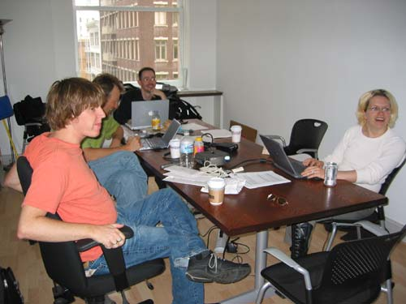

|
Ok, now jump to San Francisco, a day later. We spent the afternoon hanging out in the Adaptive Path office, watching while Jeff Veen, Jesse Garrett, and Janice Fraser did actual work. It made us feel that much more like we were on vacation. |